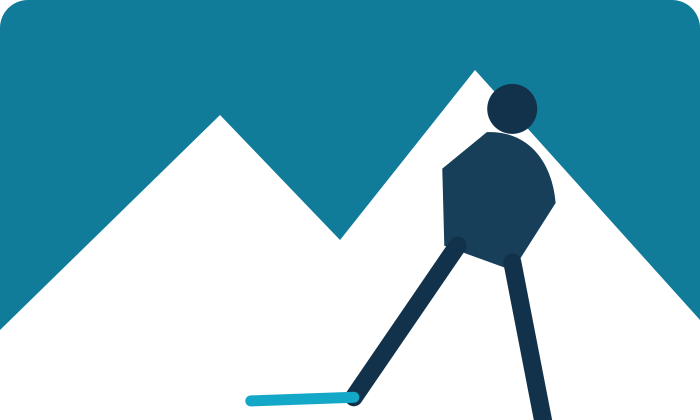
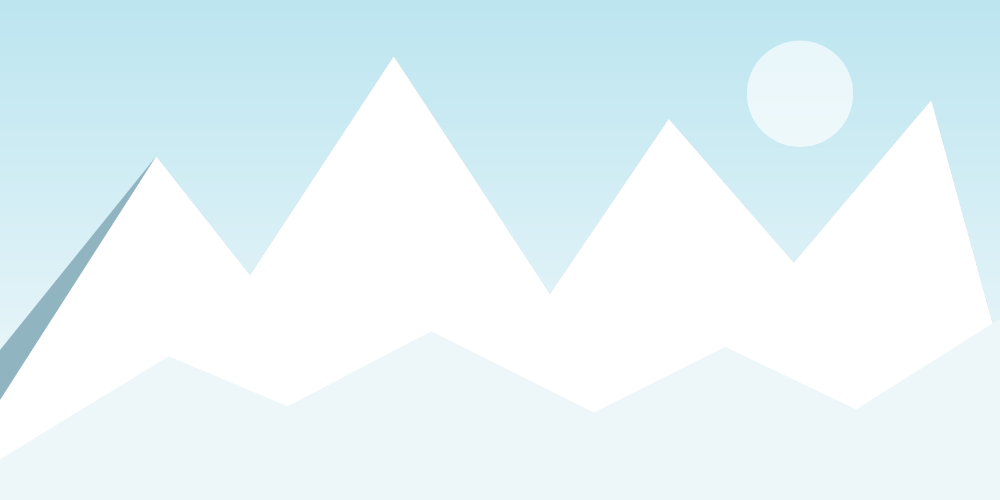
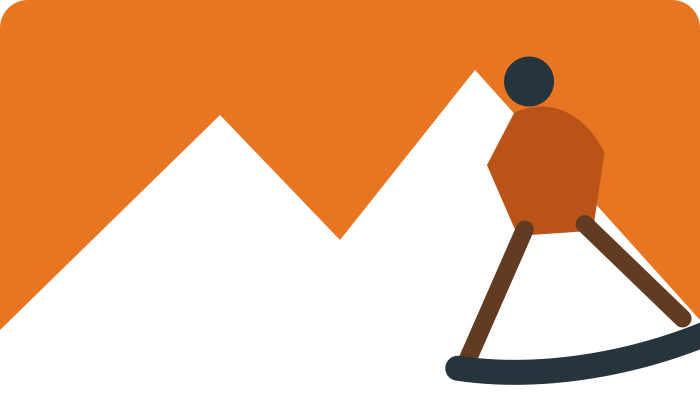

Ski · Snowboard · Montaña
Tu equipo.
Más montaña.
Guías, material y destinos para vivir la nieve al máximo. Descubre qué llevar y dónde disfrutarlo.
Explora la nieve →Elige tu forma de bajar
Ver material →
Productos destacados
Ver todos los productos →SALOMON
Esquís All-Mountain
Desde 699 €Comparar →
ATOMIC
Botas Hawx Ultra
Desde 449 €Comparar →
OAKLEY
Máscaras de nieve
Desde 129 €Comparar →
BURTON
Snowboard Custom
Desde 599 €Comparar →
Estaciones destacadas
Ver todas →Últimos artículos
Ver todos →GUÍAS
Cómo elegir tus esquís según tu nivel
Las claves para encontrar el esquí adecuado.
ESTACIONES
Las mejores estaciones para esquiar en España
Destinos para tu próxima escapada.
MATERIAL
Snowboard: tipos, tallas y cómo elegirlo
Todo lo que necesitas saber antes de comprar.